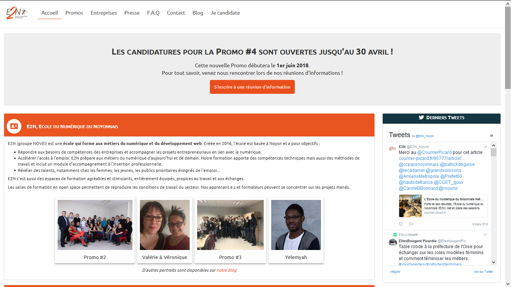
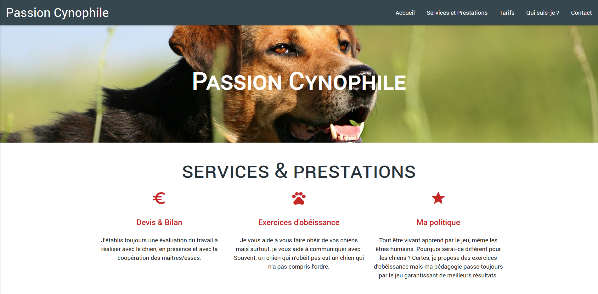
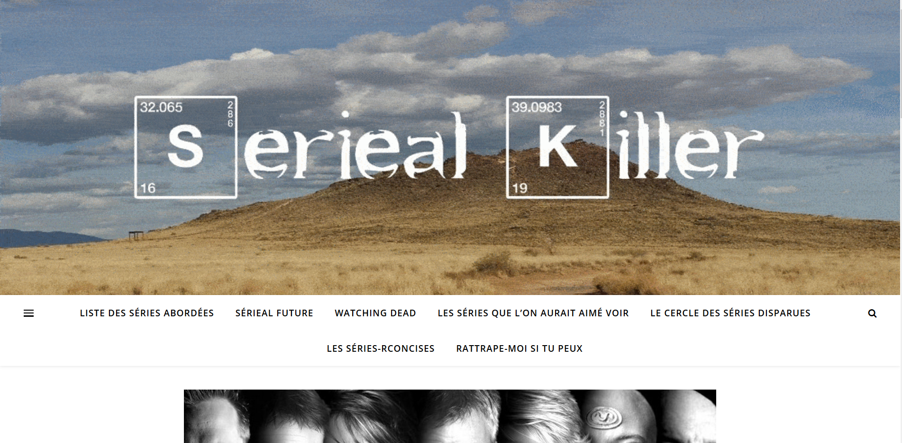

Je m'appelle Johanne, je suis développeuse web et formatrice DWWM et CDA. Je développe plusieurs CV Numériques sur des thèmes variés comme le film noir, l'ambiance 80's california beach ou même Stranger Things. Ce CV a été réalisé presque sans css, j'ai voulu mettre en avant l'utilisation de Bootstrap 4.6.
Compétences
Langages
HTML 5
CSS 3
Sass
Javascript
PHP
MySQL
Canvas
C-Sharp
T-SQL
Frameworks / Librairies / CMS
Bootstrap 4 / 5
jQuery
Cleave
Tarteaucitron
Ajax
AngularJS
Symfony
CodeIgniter
Wordpress
Outils
Git
JMerise
Adobe XD
Pencil
Parcours
Certification OPQUAST
Qualité Web - Bonnes
pratiques
Score : 850/1000 / Rang : Avancé

Lien de vérification certificat
2017
Formatrice DWWM et CDA
La Manu - Novei Formation, Noyon
Principales missions
- Développement et maintenance du site
- Accompagner les apprenants dans l'apprentissage des langages et techniques de développement
- Création de cours et d'exercices
2016 - Aujourd'hui
Développeuse full-stack junior - Stage
Colibri Agency, Tergnier
Mission
Conception et développement d'une application de gestion de clients et de prospects
2015 - 2016
Titre Professionnel Développeur-se Logiciel (RNCP Niv. III - Bac+2) - Obtenu
AFPA, Beauvais
Principaux projets
- Création d'un site de gestion de stock d'une entreprise de vente d'instruments de musique
- Création d'un logiciel de gestion de stock d'une entreprise de vente d'instruments de musique
2015 - 2016
Technicienne informatique - Stage
MPC Informatique, Noyon
2015
Téléconseillère
Webhelp - EDF, La Croix-Saint-Ouen
2014
Bac Littéraire Option Anglais Renforcé - Littérature Anglophone - Obtenu
Lycée Jean Calvin, Noyon
2012
Réalisations

Site E2N
Site vitrine pour le centre de formation E2N. Réalisé en HTML/CSS, Javascript, jQuery, PHP et MySql. Utilisation du framework Bootstrap 3. Création d'une page d'accueil, une page de présentation des apprenants, mise en place d'une gestion de cookies et intégration du flux des réseaux sociaux.
Site fermé en 2018

Passion Cynophile
Site vitrine pour un éducateur canin indépendant. Réalise en HTML/CSS. Utilisation du framework Materialize. Création d'un site one-page avec un effet de paralaxe.
Site fermé en 2019

Sérieal Killer
Blog Wordpress sur le thème des séries tv / audio. Mise en place d'un thème, d'un formulaire de contact protégé par un captcha.
Voir le siteHobbies et Bénévolat
Ecriture
Pâtisserie
Code et aide à l'apprentissage du code
Natation
Echecs
Aide aux animaux